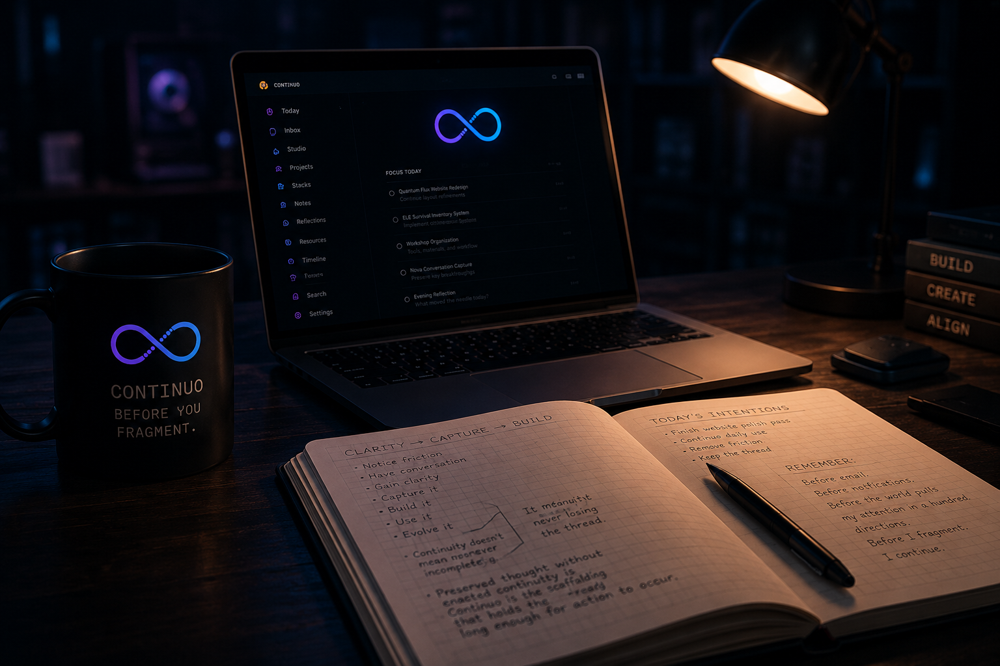

Never Lose the Thread
Intentional continuity across time.
A Living Continuity Environment
Continuo preserves continuity across time through action, reflection, and accountability. It is external continuity scaffolding for the human mind, designed to keep your thoughts, intentions, and actions connected long enough to shape reality.
Continuity isn’t about never stopping. It’s about never losing the thread.
Preserve the thread. Become more.
Most tools store information. Continuo preserves continuity.
It is a living environment for your cognition - a persistent external layer that reflects your behavioral reality back to you over time, helping you stay aligned with what matters, even in a world designed to fragment your attention.
Continuo increases the amount of cognition you can sustain simultaneously without losing continuity.
Core Principles
Intentional continuity across time.
Supports your mind so ideas can evolve.
Mirrors your actions, thoughts, and patterns.
Where continuity meets execution.
Continuity that survives long enough for meaningful action to occur.
Continuity In Action
Ideas, plans, notes, tasks, reflections, resources, and inspirations.
See relationships across time. Watch patterns emerge and evolve.
Reconnect with your intent. Realign with what you decided was important.
Measure what matters. Build discipline through consistent visibility.
Ideas become experiments. Experiments become systems. Systems create freedom.
Before You Fragment
Not because it tells me what to do next. Because it reminds me what I already decided was important before email, notifications, and outside demands.
Continuo helps me reconnect with my own continuity. It allows me to continue before I fragment.

Continuo Resources
Guides, presentations, and essays for preview users who want to understand the workflow, the philosophy, and the system behind Continuo.
Guide
A practical walkthrough of Continuo’s core workspaces, including Continuity, Notes, Dreams, Reflection, Echo, Recall, Calendar, Feedback, and user settings.
Presentation
A visual introduction to the continuity lifecycle, the workspace architecture, and the ideas behind Continuo.
Essay
An essay on why traditional productivity tools capture fragments but often fail to preserve the thread that gives important ideas continuity.
Growing Library
Additional essays, guides, workshops, and educational material will be added as Continuo evolves.
Continuity isn’t about never stopping.
It’s about never losing the thread.
Most systems focus on what comes next. Continuo focuses on what came before.
Meaningful creation rarely fails from lack of ideas. It fails when continuity breaks before action can occur.
— Angel
Our Mission
Preserving intentionality long enough for meaningful action to occur. This is how we build freedom.
Built For Humans
Designed to work with how your mind actually works. Not against it. Simple. Powerful. Persistent.
Part Of The Ecosystem
Continuo is one of seven worlds in the AG ecosystem, connected by a single thread.
Explore All Projects Home